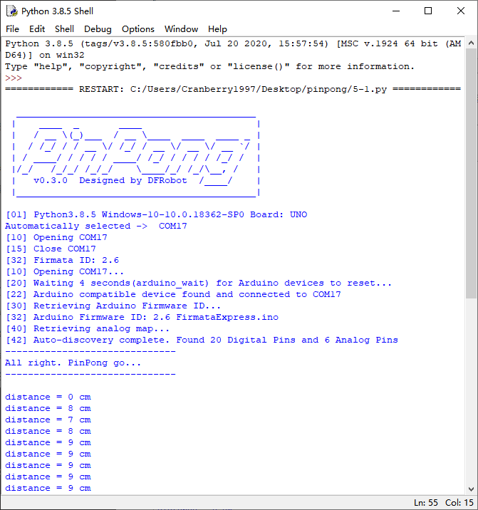

项目5 近视警示器¶
一、概述¶
近视眼越来越多，抛开遗传因素，主要还是不良用眼习惯导致的。特别是弓腰驼背，埋头看书，但是知道归知道，真的坐下本来挺直的腰杆又不知不觉地趴在桌子上。
为了健康，为了保护视力，我们用蜂鸣器和超声波传感器做一个简易近视警示器。
二、项目实施¶
（1）使用超声波测距¶
硬件准备：¶
主控：Arduino UNO、IO 传感器扩展板 V7.1
模块：超声波传感器
连接线：TypeAtoB方口USB连接线
接线引脚TRIG–D7 、ECHO–D8、 GND–GND 、+5v–VCC
程序编写：¶
1、在示例程序中找到hcr04.py，并用IDLE打开，并修改端口号，或删去端口号，使用自动识别。

2、摁下F5运行程序，查看效果。在新弹出的窗口中会显示超声波传感器测得的距离。
注意：在程序运行时不可以拔掉与Arduino连接的USB线，且不能关闭新弹出的Python shell运行窗口，如果拔线或者关闭运行窗口，程序功能就会停止执行。
（2）使用蜂鸣器模块¶

程序编写：¶
1、在示例程序中找到buzzer.py，并用IDLE打开，并修改端口号。

2、摁下F5运行程序，查看效果。在新弹出的窗口中会显示蜂鸣器的声音频率，蜂鸣器会按音阶递进响起。

注意：在程序运行时不可以拔掉与Arduino连接的USB线，且不能关闭新弹出的Python shell运行窗口，如果拔线或者关闭运行窗口，程序功能就会停止执行。
（3）完成近视警示器¶
硬件准备：¶
主控：Arduino UNO、IO 传感器扩展板 V7.1
模块：蜂鸣器模块、超声波传感器
连接线：TypeAtoB方口USB连接线
硬件连接图：

接线引脚TRIG–D7 、ECHO–D8、 GND–GND 、+5v–VCC
将蜂鸣器模块接入D4引脚。
程序编写：¶
1、设计程序逻辑图

2、导入必要的包和初始化设置。
import sys
import time
from pinpong.pinpong import*
from pinpong.libs.DFRobot_BUZZER import*
from pinpong.libs.DFRobot_HCSR04 import*
board = PinPong("uno","com5")
board.connect()
TRIGER_PIN = Pin.D7
ECHO_PIN = Pin.D8
BUZZERR_PIN = Pin.D4
sonar = DFRobot_HCSR04(board,Pin(board,TRIGER_PIN),Pin(board,ECHO_PIN))
buzzer = DFRobot_BUZZER(board,Pin(board,BUZZERR_PIN))
buzzer.freq(200)
buzzer.off()
3、加入逻辑判断部分。
while True:
dis = sonar.read()
print(str(dis))
if dis < 50:
buzzer.on()
time.sleep(1)
else:
buzzer.off()
time.sleep(1)
4、运行代码，当超声波传感器监测到距离小于50时，蜂鸣器会报警提示距离桌面太近。

三、代码分析¶
import sys
import time
from pinpong.pinpong import*
from pinpong.libs.DFRobot_BUZZER import*
from pinpong.libs.DFRobot_HCSR04 import* #导入必要的库函数
board = PinPong("uno","com5")
board.connect() #初始化Aduino
TRIGER_PIN = Pin.D7
ECHO_PIN = Pin.D8
BUZZERR_PIN = Pin.D4 #初始化模块引脚
sonar = DFRobot_HCSR04(board,Pin(board,TRIGER_PIN),Pin(board,ECHO_PIN))#定义超声波传感器
buzzer = DFRobot_BUZZER(board,Pin(board,BUZZERR_PIN)) #定义蜂鸣器模块
buzzer.freq(200) #初始化蜂鸣器频率
buzzer.off()
while True:
dis = sonar.read() #读取超声波传感器距离
print(str(dis))
if dis < 50:
buzzer.on()
time.sleep(1)
else:
buzzer.off()
time.sleep(1)
四、硬件分析¶
1.认识超声波传感器
目前主流的测距传感器有超声波测距传感器，红外线测距传感器，激光测距传感器和雷达传感器。其中，超声波传感器适用于大幅平面静止测距。普通超声波传感器测距范围约2cm~450cm。
我们可以很清楚的看到实物超声波传感器上有 4 个角：VCC—5V 电源脚, Trig—出发控制端，Echo—接收端，GND—地段。图片中双探头传感器中，一个用来发送超声波，一个用来接收超声波。中间的单头超声波传感器即可以发送也可以接收超声波。这个传感器是我们接触的第一个四个引脚的传感器，使用的接线也比较特殊，后面的硬件连接需要做特殊处理。
超声波传感器测量距离的过程，超声波发射器向某一方向发射超声波，同时开始计时；超声波在空气中传播，一旦碰到障碍物立即折返；超声波接收器接收到反射波，同时停止计时。那么距离就可以通过时间差来计算出来。
2.认识蜂鸣器
首先，我们对喇叭应该非常熟悉，常见的耳机就是两个小喇叭，还有收音机，MP3，PM4播放器，电视机音响的发生原件都是喇叭。喇叭也叫做扬声器，是电声转换期间，它可以把模拟电信号转换为声音信号，属于宽频率发声器件。
而蜂鸣器是一体化的电子讯响器，可以在不同驱动波形下发出单调的声音，属于窄频率发声器件。我们可以通过改变频率设置蜂鸣器发声音高。
从外在表现看，喇叭和蜂鸣器最大区别是喇叭可以发出各种声音，而蜂鸣器只能发出几种单调的声音。从内在发声原理来看,蜂鸣器是利用压电陶瓷将电信号转化为机械振动信号；扬声器是利用电磁铁将电信号转化为机械振动信号。